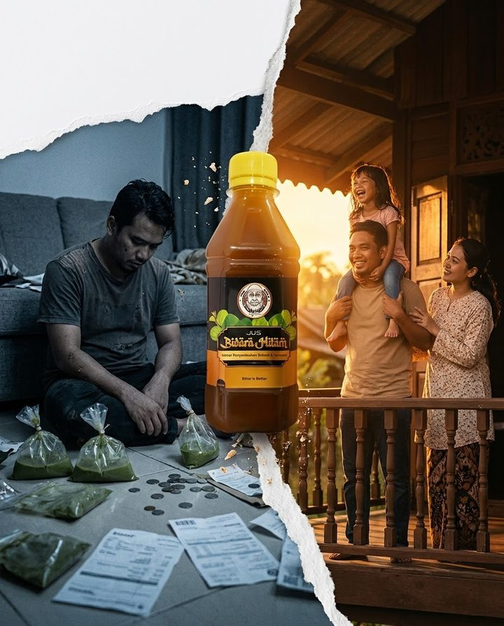

Nota yang terselit dalam beg kerja ayah…
Ayah…
bila ayah nak berhenti
minum air hijau tu?
— anak ayah
♥

Dia tak faham…
kenapa ayah selalu marah
kenapa duit selalu tak cukup
kenapa ayah tak boleh pergi jauh
Badan sakit
Menguap
Gelisah
Tak tidur
…jadi kau minum lagi.

Tapi ramai dah lalu jalan ni…
dan bebas.
Perjalanan mereka
Komen sebenar pembeli Jus Bidara Hitam
HARI KE-3
“dh 3 hari… dh stop cek tom”
HARI KE-7
“hari ni ke-7 sy tinggalkan ciktom”
3 MINGGU
“separuh botol… 3 minggu tak sentuh”
2 BULAN
“14 tahun minum… dah dekat 2 bulan”
Ikhtiar mereka
Jus Bidara Hitam
Ikhtiar Penyembuhan Rohani & Jasmani
4
penutup + segelas airPagi & malam selepas makan, dan bila datang rasa ketagihan
Mula hari ini
RM35
RM24
sebotol (300ml)
★ PALING BERBALOI ★
3 BOTOL RM60
+ POS PERCUMA SEMENANJUNG
✔ COD seluruh Malaysia
✔ Ada KKM · Rosak? Ganti baru
Ayah…
bila ayah nak berhenti?
Terima kasih sebab
berhenti, ayah.
♥
Buat untuk dia.
Mula hari ini.
TEMPAH SEKARANGWhatsApp 017-963 7611 · COD ada
Produk tradisional, bukan pengganti rawatan perubatan. Keputusan berbeza mengikut individu.
Jus Bidara Hitam ◆ Mbah Lanang